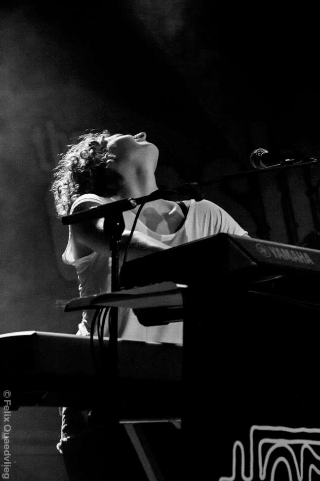
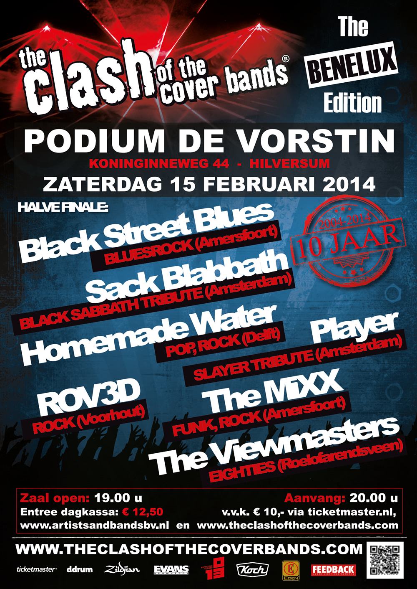
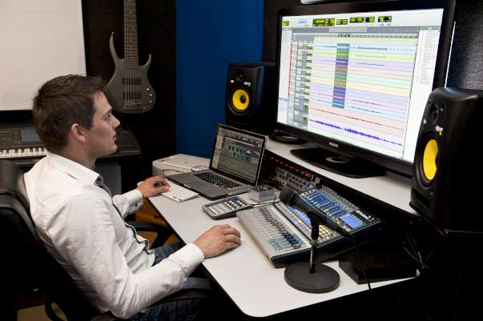
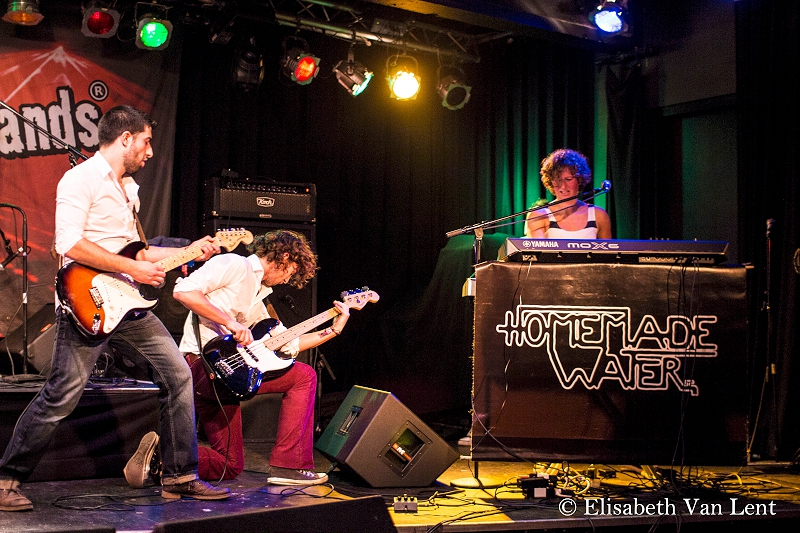

Het laatste nieuws!
Om ons op de voet te volgen, verwijzen we u door naar onze facebook pagina
Professionele opname van I'm Just Me

In November hebben we een gratis studio-opname gewonnen bij Loenswork studio. Aanstaande zaterdag gaat deze opname ook echt gebeuren en zal onze (soon to be) hit "I'm Just Me" een professioneel randje krijgen.
Door naar de regiofinale van Clash of the Coverbands
Afgelopen zaterdag (15 februari) mochten we aantreden op podium de Vorstin in Hilversum. Met een op het laatst toegevoegd bandje waren we in totaal met maar liefst 8 verschillende bandjes. En van die 8 mochten er maar drie (3!) door. Bandjes als Sack Blabbath (Black Sabbath tribute band) en Black Street Blues (bluesrock) lieten horen dat niet alleen Homemade Water een beetje muziek kan maken.
PERSBERICHT: 3e Halve Finale Regio West Nederland 'The Clash of the Cover Bands, in Podium de Vorsti
Op zaterdag 15 februari a.s. vindt in Podium de Vorstin in Hilversum de 3e Halve Finale plaats waar zeven bands de muzikale strijd met elkaar aan gaan in deze grootste zoektocht naar de beste en populairste coverband van de Benelux. Met uitsluitend nog topbands in de competitie belooft het weer een spannend feest der herkenning te gaan worden. De bands worden zowel door een vakjury als door het publiek beoordeeld en de winnaars plaatsen zich voor de Regio-Finale die wordt gehouden in de Melkweg in Amsterdam op zondag 18 mei 2014. Podium de Vorstin, Koninginneweg 44 in Hilversum opent op zaterdag 15 februari a.s. om 19.00 uur haar deuren en het programma start om 19.30 uur.
Studio-opname gewonnen bij Loenswork studio
Loenswork studio van Ferry de Ronde heeft ons, samen met een paar andere bandjes de mogelijkheid gegeven om in zijn studio een gratis demo op te komen nemen!
Clash of the Coverbands, voor een kwart regiofinale
Na een aantal maanden hard te hebben geoefend op onze performance was het eindelijk weer tijd om onze skillz te testen en te kijken of we weer een juryprijs in ontvangst konden slepen. Oorspronkelijk was het de bedoeling dat we 6 concurrenten zouden hebben deze avond, maar helaas/gelukkig hadden 2 bands zich teruggetrokken uit deze ronde waarna we nog maar 4 concurrenten overhielden. Van de in totaal 5 bands zouden er maar liefst 4 doorgaan naar de volgende ronde! Je begrijpt dus wel dat het meer een kwestie was van niet verliezen dan van moeten winnen. Dat weerhield ons er echter niet van om vol enthousiasme voor de eerste plek te gaan!